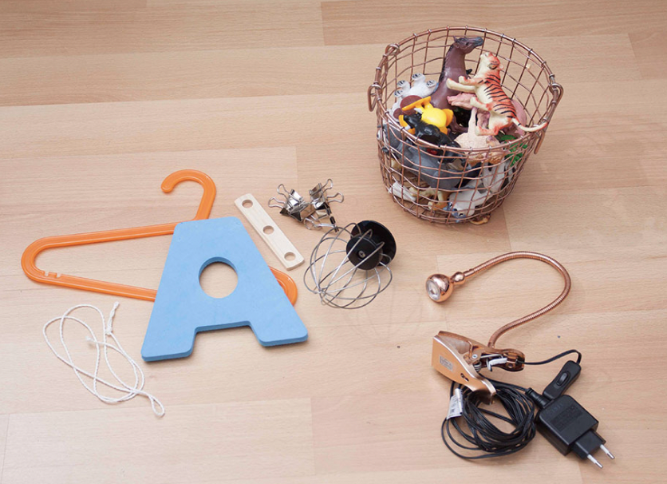
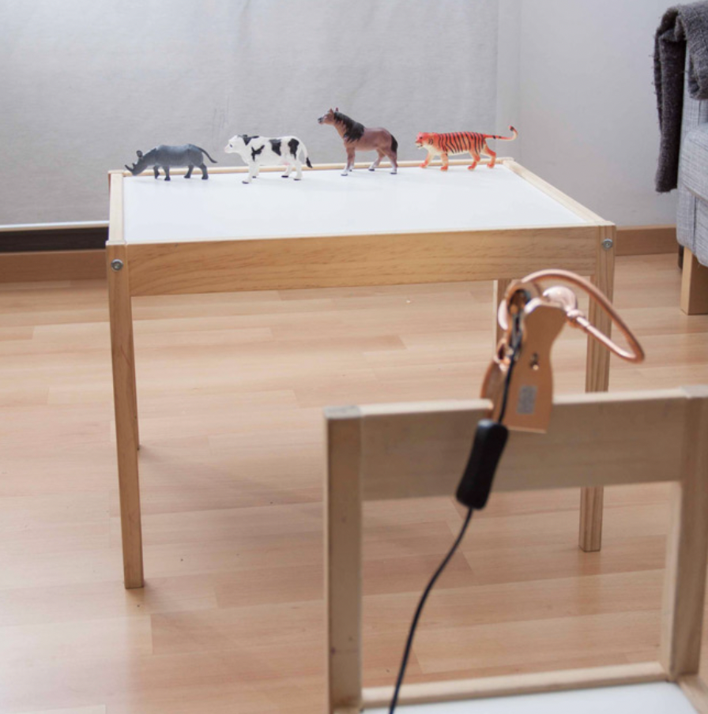
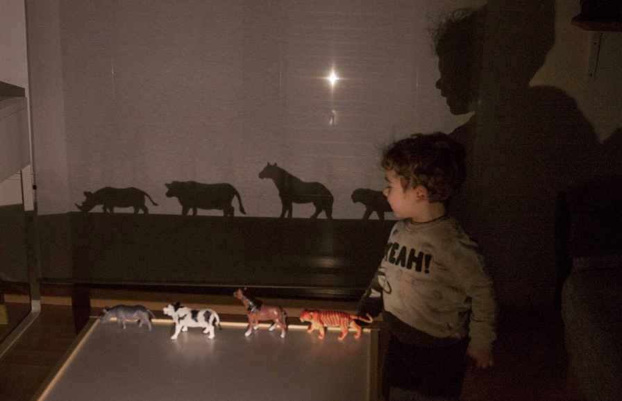

Experimentamos con luces y sombras
El juego que os propongo hoy es divertido, creativo, y puede tener un sinfín de variantes… vamos a experimentar con luces y sombras. Para jugar no necesitamos mucho, solo una luz con cierta potencia (como un faro o una lámpara potente), una pared blanca o una sábana donde proyectar las sombras, y cualquier objeto que pueda producir sombra.
Materiales necesarios
Una fuente de luz (una lámpara, un faro, una linterna potente)
Una pared blanca y despejada, o una sábana blanca para colgar
Objetos para hacer los juegos de sombras: juguetes, pero también cualquier tipo de objeto que pueda proyectar una sombra interesante.

Paso a paso
1-Vamos a colocar nuestra fuente de luz a una cierta distancia (unos 3 metros aprox) de la pared donde vamos a proyectar las sombras. En el medio entre la pared y la luz, pondremos una mesa para apoyar los objetos. La luz tiene que estar más o menos a la misma altura que los objetos para que la sombra sea nítida y no distorsione demasiado la forma de los objetos.

2- Apagamos las luces de la clase y el juego comienza.
3- Vamos a experimentar moviendo los objetos, creando escenas, y entrando con nuestra propia sombra en ellas.